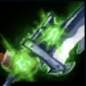
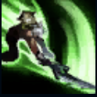
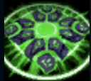
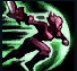
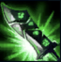

PASSIVE
RUNIC BLADE:
Riven's abilities charge her blade, and her basic attacks expend charges to deal an additional damage.

Q
BROKEN WINGS:
Riven lashes out in a series of strikes. This ability can be reactivated three times in a short time
frame with the third hit knocking back nearby enemies.

W
KI BURST:
Riven emits a Ki Burst, damaging and stunning nearby enemies.

E
VALOR:
Riven steps forward a short distance and blocks incoming damage.

R
BLADE OF THE EXILE:
Riven empowers her keepsake weapon with energy, and gains Attack Damage and Range. During this time, she
also gains the ability to use Wind Slash, a powerful ranged attack, once.